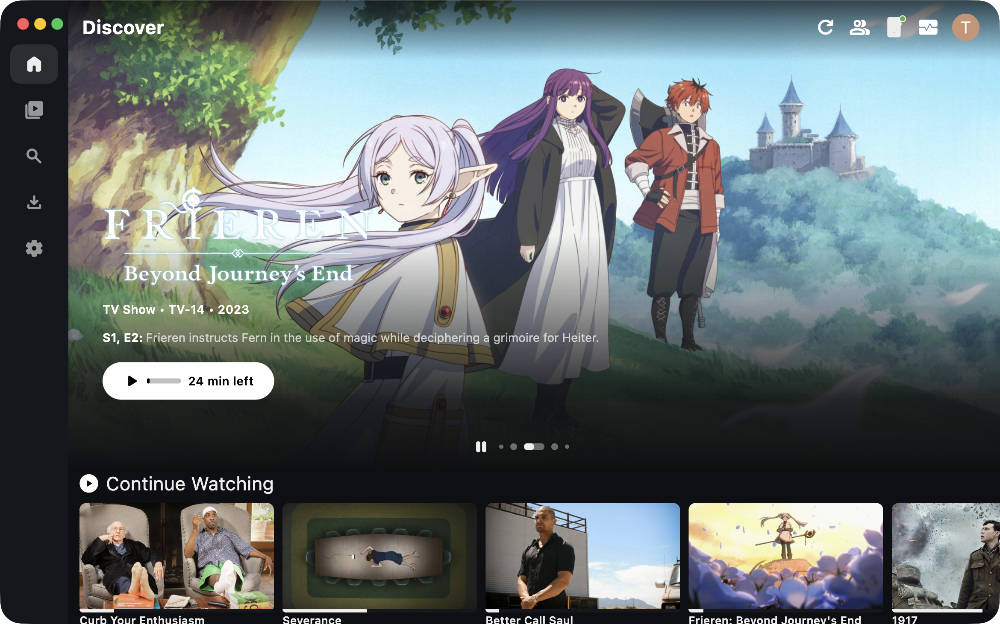
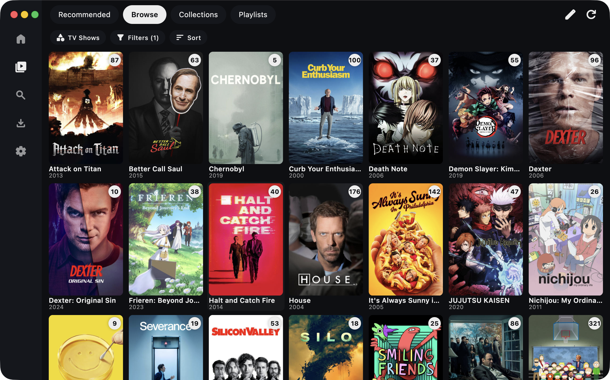
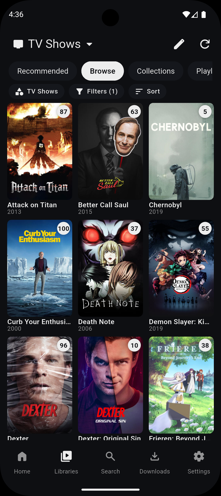
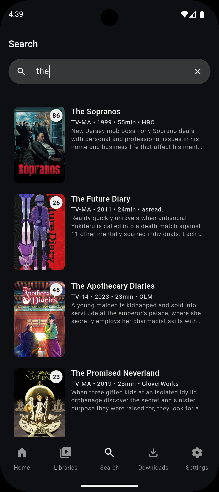
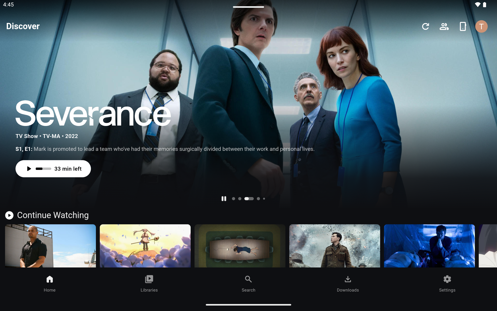
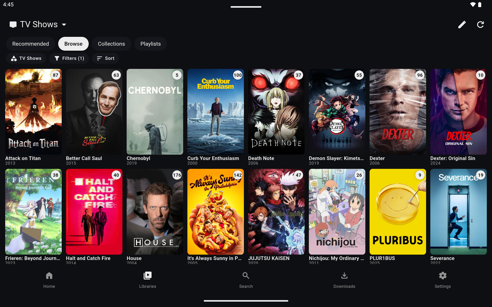
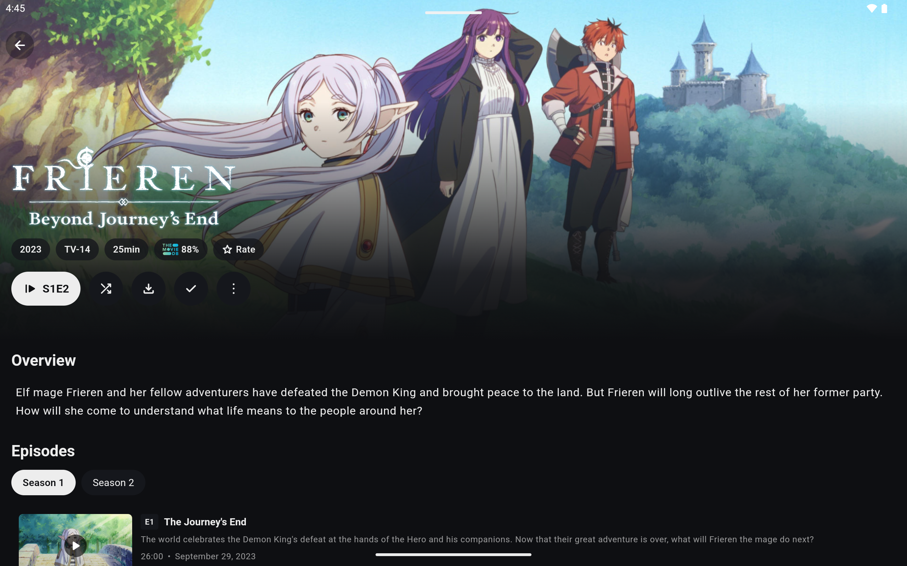
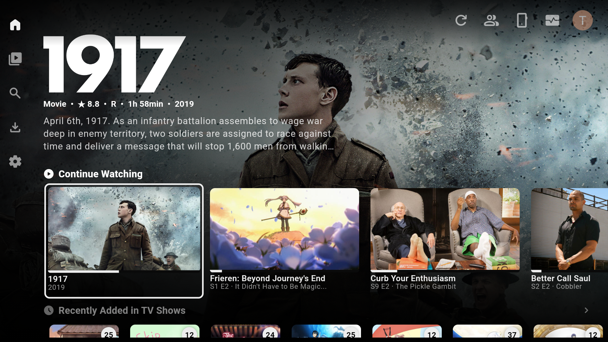
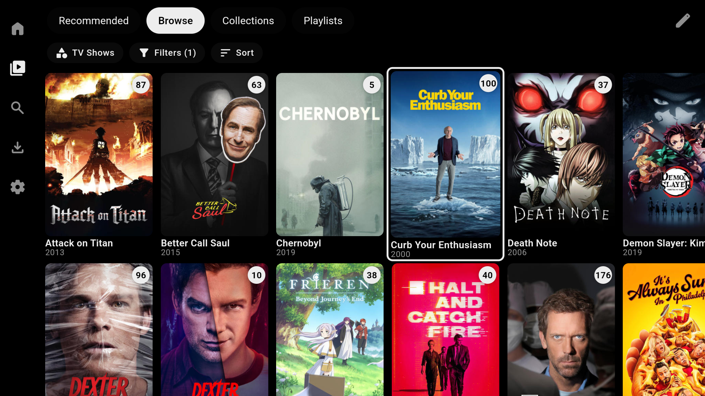

一、7 大核心页面原型 每页均支持右上角切换 Desktop / Tablet / Mobile / TV 与 Before-After 对比
首页与发现页 (Discover)
解决原版 Hero Logo 缺暗角遮罩、纯白按钮过刺眼的问题。加入动态氛围渐变 Backdrop、毛玻璃来源标签、进度条卡片，以及 TV 端顶栏胶囊导航 + 焦点随动大图。
媒体库与海报墙 (Libraries)
参考 VidHub 左侧源树 + Infuse 海报墙：支持「本地电影 / 剧集 / 动漫 / 综艺 / 纪录片」与 Emby/Jellyfin 同级切换；把刺眼的纯白圆角数字角标改为半透明暗色毛玻璃胶囊。
影视详情与多版本页 (Detail)
Infuse 招牌双层质感：顶部全幅剧照 + 底部模糊色晕，展示 4K / Dolby Vision / Atmos / 编码格式徽章、多挂载版本切换胶囊（夸克原画 vs SMB 4K REMUX）、演职员圆角卡与分集进度。
影院级播放器 HUD (Player)
摒弃铺满底部的传统黑条，采用 Infuse/VidHub 悬浮毛玻璃控制胶囊，集成片头/片尾跳过按钮、章节分段刻度、实时码率/HDR 信息浮标，以及可交互音轨/字幕/版本抽屉。
跨源聚合搜索 (Search)
Spotlight 风格悬浮毛玻璃搜索栏，按「本地刮削库 / 夸克网盘 / Emby 服务器 / 演职员」分组展示结果，卡片右侧带来源与画质标签，TV 端适配虚拟键盘与热门联想。
存储挂载与刮削中心 (新功能核心)
针对你 fork 新增的 mounts_screen / scraper_settings / manual_match 重新打造：VidHub 式存储源卡片（本地/SMB/WebDAV/夸克扫码）、扫描限速仪表盘、未匹配人工纠偏队列。
二、Vidu / VidHub × Infuse 视觉规范摘要 可直接映射至 Flutter MonoTokens
bg #0B0D12 · 深空影院底色，替代纯黑生硬对比glassSurface rgba(20,23,32,0.62) + Blur 24pxspecularBorder 1px rgba(255,255,255,0.14) 高光描边
• Desktop：左置可折叠毛玻璃树状栏（常用 + 本地分类 + 挂载源/Emby）
• Mobile：底部悬浮胶囊 Dock（Home / 媒体库 / 搜索 / 下载 / 我的）
• Tablet：顶部居中毛玻璃胶囊 + 侧边可滑出目录
• TV：顶部自动隐藏毛玻璃胶囊 + 1.06x 焦点浮起与白光外圈
• 去掉刺眼的纯白实心集数圆标，改用 暗色毛玻璃微章
• 卡片底部最多 2 行文字（片名 + 年份/评分或剧集进度）
• 左上角仅在多源混排时展示极小来源标签（如 夸克 / SMB / Emby）
• 4K / DV / HDR 等技术参数集中在详情页与 Hover 浮层
• 你既有 本地/网盘刮削（电影/剧集/动漫/综艺/纪录片），又保留了 Emby/Jellyfin
• VidHub 擅长把「网盘挂载 + 未匹配人工纠偏 + 多版本合并」做得清晰直观
• Infuse 擅长把「海报墙 + 详情页 + 播放器」做出高级影院感
三、现有工程界面盘点与映射表 基于 lib/screens/ 与 docs/fork-plan.md
| 现有代码界面 | 现状观察 / 痛点 | 重设计目标模块 | 已有现版截图 |
|---|---|---|---|
discover_screen.dart + main_screen.dart |
Hero 缺渐变暗角，纯白继续观看胶囊过亮，侧栏无源分组 | 01 首页与发现页 | desktop / tablet / phone / tv-home.png |
libraries_screen.dart + hub_detail_screen.dart |
纯白集数角标抢画面；本地五大分类与 Emby 入口区分不够直观 | 02 媒体库与海报墙 | desktop / tablet / phone / tv-library.png |
media_detail_screen.dart + collection_detail_screen.dart |
缺编码/HDR/文件体积徽章，多版本（网盘/SMB）选择不够显眼 | 03 影视详情页 | desktop / tablet / phone / tv-md.png |
video_player_screen.dart + sheets/* |
底栏横贯整屏，偏传统黑条；音轨/字幕/版本抽屉质感较平 | 04 影院级播放器 | desktop / tablet / tv-player.png |
search_screen.dart + explore_screen.dart |
列表单一，未按本地库 / 网盘 / 服务器 / 演职员聚合分栏 | 05 全局搜索 | phone-search.png |
storage/mounts_screen.dart · mount_edit_screen.dart · scraper_settings_screen.dart · manual_match_dialog.dart |
Fork 新增核心能力，目前是基础 M3 表单列表，缺乏视觉状态与刮削工作流 | 06 存储挂载与刮削中心 | 基于源码结构新建重构稿 |
downloads_screen.dart · settings_screen.dart · profile_switch_screen.dart |
设置项层级深、下载队列缺存储环、多工作区切换偏列表化 | 07 下载 / 设置 / 用户切换 | 基于源码结构新建重构稿 |
四、已收集的现版实机截图 (16 张) 已独立复制到 ui_redesign/screenshots/

desktop-home.png
desktop-library.png desktop-md.png
desktop-md.png desktop-player.png
desktop-player.png phone-home.png
phone-home.png
phone-library.png phone-md.png
phone-md.png
phone-search.png
tablet-home.png
tablet-library.png
tablet-md.png tablet-player.png
tablet-player.png
tv-home.png
tv-library.png tv-md.png
tv-md.png tv-player.png
tv-player.png